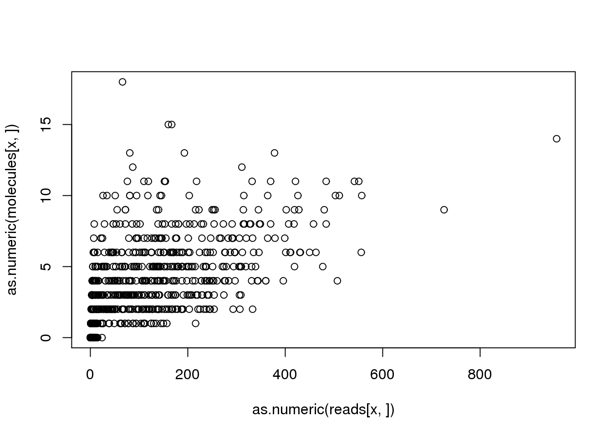

Last updated: 2016-04-01
Code version: 34345c9c3889d9b3b288f2e4f80ff6b3e0d7a5e7
Since my last attempt at debugging, I re-mapped all the reads using Subjunc to avoid problems arising from the large amount of soft-clipping Subread does. Very unfortunately there are still some problems. This analysis continues the search for bugs lurking in the sequence processsing pipeline.
Input annotation.
anno <- read.table("../data/annotation.txt", header = TRUE,
stringsAsFactors = FALSE)Input read counts.
reads <- read.table("../data/reads.txt", header = TRUE,
stringsAsFactors = FALSE)
stopifnot(ncol(reads) == nrow(anno),
colnames(reads) == anno$sample_id)Input molecule counts.
molecules <- read.table("../data/molecules.txt", header = TRUE,
stringsAsFactors = FALSE)
stopifnot(ncol(molecules) == nrow(anno),
colnames(molecules) == anno$sample_id)Input list of quality single cells.
quality_single_cells <- scan("../data/quality-single-cells.txt",
what = "character")How often is this a problem? How many genes does it affect? For affected genes, how many samples are affected?
discordant_zeros <- (reads == 0) != (molecules == 0)
all_genes <- rowSums(discordant_zeros)
names(all_genes) <- rownames(reads)
problem_genes <- all_genes[all_genes > 0]
length(problem_genes)[1] 727length(problem_genes) / length(all_genes)[1] 0.03820886summary(problem_genes) Min. 1st Qu. Median Mean 3rd Qu. Max.
1.000 1.000 1.000 1.461 1.000 28.000 This problem affects 727 out of the 19027 total genes (3.82%). For these problem genes, the median number of affected samples is 1 and the max number of affected samples is 28.
Next I identify the problem gene that affects the most samples.
(x <- names(problem_genes)[problem_genes == max(problem_genes)])[1] "ENSG00000205544"plot(as.numeric(reads[x, ]), as.numeric(molecules[x, ]))
problem_sample <- colnames(reads)[discordant_zeros[x, ] == TRUE]
reads[x, problem_sample] NA19098.r1.A03 NA19098.r1.G03 NA19098.r2.B05
ENSG00000205544 13 9 4
NA19098.r2.B06 NA19098.r2.C01 NA19098.r2.D06
ENSG00000205544 2 2 3
NA19098.r3.B06 NA19098.r3.B07 NA19098.r3.C11
ENSG00000205544 5 5 2
NA19098.r3.E12 NA19101.r1.A08 NA19101.r1.B08
ENSG00000205544 5 10 13
NA19101.r1.B09 NA19101.r1.E07 NA19101.r1.F11
ENSG00000205544 15 24 4
NA19101.r1.H12 NA19101.r2.C04 NA19101.r2.C06
ENSG00000205544 7 11 7
NA19101.r2.C07 NA19101.r2.G03 NA19101.r3.A12
ENSG00000205544 2 2 10
NA19101.r3.B06 NA19101.r3.F07 NA19101.r3.F08
ENSG00000205544 1 9 5
NA19101.r3.G01 NA19101.r3.H07 NA19239.r1.G10
ENSG00000205544 2 4 3
NA19239.r2.D08
ENSG00000205544 4molecules[x, problem_sample] NA19098.r1.A03 NA19098.r1.G03 NA19098.r2.B05
ENSG00000205544 0 0 0
NA19098.r2.B06 NA19098.r2.C01 NA19098.r2.D06
ENSG00000205544 0 0 0
NA19098.r3.B06 NA19098.r3.B07 NA19098.r3.C11
ENSG00000205544 0 0 0
NA19098.r3.E12 NA19101.r1.A08 NA19101.r1.B08
ENSG00000205544 0 0 0
NA19101.r1.B09 NA19101.r1.E07 NA19101.r1.F11
ENSG00000205544 0 0 0
NA19101.r1.H12 NA19101.r2.C04 NA19101.r2.C06
ENSG00000205544 0 0 0
NA19101.r2.C07 NA19101.r2.G03 NA19101.r3.A12
ENSG00000205544 0 0 0
NA19101.r3.B06 NA19101.r3.F07 NA19101.r3.F08
ENSG00000205544 0 0 0
NA19101.r3.G01 NA19101.r3.H07 NA19239.r1.G10
ENSG00000205544 0 0 0
NA19239.r2.D08
ENSG00000205544 0Note that this problem genes affects both high and low quality single cells.
table(problem_sample %in% quality_single_cells)
FALSE TRUE
7 21 Now I am going to search for the bug by inspecting the intermediate data files from the sequence processsing pipeline.
The following chunks are all Bash commands run from the data directory.
opts_chunk$set(engine = "bash")
opts_knit$set(root.dir = "/mnt/gluster/home/jdblischak/ssd")First I confirm that this difference is observed at the featureCounts step:
# reads per lane
grep ENSG00000205544 counts/19098.1.G03*trim.sickle.sorted.genecounts.txt | cut -f1,7counts/19098.1.G03.AGGGAAGC.L002.R1.C6WYKACXX.trim.sickle.sorted.genecounts.txt:ENSG00000205544 3
counts/19098.1.G03.AGGGAAGC.L003.R1.C6WURACXX.trim.sickle.sorted.genecounts.txt:ENSG00000205544 4
counts/19098.1.G03.AGGGAAGC.L006.R1.C723YACXX.trim.sickle.sorted.genecounts.txt:ENSG00000205544 2# molecules per lane
grep ENSG00000205544 counts/19098.1.G03*trim.sickle.sorted.rmdup.genecounts.txt | cut -f1,7counts/19098.1.G03.AGGGAAGC.L002.R1.C6WYKACXX.trim.sickle.sorted.rmdup.genecounts.txt:ENSG00000205544 0
counts/19098.1.G03.AGGGAAGC.L003.R1.C6WURACXX.trim.sickle.sorted.rmdup.genecounts.txt:ENSG00000205544 0
counts/19098.1.G03.AGGGAAGC.L006.R1.C723YACXX.trim.sickle.sorted.rmdup.genecounts.txt:ENSG00000205544 0# molecules per sample
grep ENSG00000205544 counts/19098.1.G03.trim.sickle.sorted.combined.rmdup.genecounts.txt | cut -f1,7ENSG00000205544 0All three lanes have reads but zero molecules.
Next I use the featureCounts assignments per read to obtain the read name.
grep ENSG00000205544 counts/19098.1.G03.AGGGAAGC.L002.R1.C6WYKACXX.trim.sickle.sorted.bam.featureCountsHWI-700819F:303:C6WYKACXX:2:2314:4761:64177:UMI_AAAAGGGG Assigned ENSG00000205544 *
HWI-700819F:303:C6WYKACXX:2:1108:14915:63494:UMI_AAAAGGGG Assigned ENSG00000205544 *
HWI-700819F:303:C6WYKACXX:2:2307:18871:68709:UMI_AAAAGGGG Assigned ENSG00000205544 *And just to confirm that it is not in the corresponding molecules file.
grep ENSG00000205544 counts/19098.1.G03.AGGGAAGC.L002.R1.C6WYKACXX.trim.sickle.sorted.rmdup.bam.featureCounts
exit 0Is it in the rmdup bam file? Presumably not since it was not passed to featureCounts.
read=`grep ENSG00000205544 counts/19098.1.G03.AGGGAAGC.L002.R1.C6WYKACXX.trim.sickle.sorted.bam.featureCounts | cut -f1 | head -n 1`
echo "The read is $read"
echo "Checking rmdup bam per lane:"
samtools view bam-rmdup-umi/19098.1.G03.AGGGAAGC.L002.R1.C6WYKACXX.trim.sickle.sorted.rmdup.bam | grep $read
echo "Checking rmdup bam per sample:"
samtools view bam-rmdup-umi/19098.1.G03.trim.sickle.sorted.combined.rmdup.bam | grep $read
echo "Checking combined bam:"
samtools view bam-combined/19098.1.G03.trim.sickle.sorted.combined.bam | grep $read
echo "Checking reads per lane bam:"
samtools view bam-processed/19098.1.G03.AGGGAAGC.L002.R1.C6WYKACXX.trim.sickle.sorted.bam | grep $read
exit 0The read is HWI-700819F:303:C6WYKACXX:2:2314:4761:64177:UMI_AAAAGGGG
Checking rmdup bam per lane:
Checking rmdup bam per sample:
Checking combined bam:
HWI-700819F:303:C6WYKACXX:2:2314:4761:64177:UMI_AAAAGGGG 16 chr17 7307333 58 85M * 0 0 GAAGCGAAGCCTAAGGCCGCAGCTCCGGACAAGGCGCCCAAGCGGCGGAAAGCTGCAGCTGGCCCGGCCATAGCTGTAGAACAGC BB7<7B<<BB<<00<B<7<BB<<7BBB<<<<BBB70<<BBBBBBFFBBFBBB<BB<0B<FB<FFFFFFFBFIIFFFFFB7<FBFF HI:i:1 NH:i:1 NM:i:1
Checking reads per lane bam:
HWI-700819F:303:C6WYKACXX:2:2314:4761:64177:UMI_AAAAGGGG 16 chr17 7307333 58 85M * 0 0 GAAGCGAAGCCTAAGGCCGCAGCTCCGGACAAGGCGCCCAAGCGGCGGAAAGCTGCAGCTGGCCCGGCCATAGCTGTAGAACAGC BB7<7B<<BB<<00<B<7<BB<<7BBB<<<<BBB70<<BBBBBBFFBBFBBB<BB<0B<FB<FFFFFFFBFIIFFFFFB7<FBFF HI:i:1 NH:i:1 NM:i:1OK. So this read is lost during the remove duplicate step. But why? Are there other reads that map to this position? I’ll focus on the lane file since it is smaller and displays the same problem.
samtools view bam-processed/19098.1.G03.AGGGAAGC.L002.R1.C6WYKACXX.trim.sickle.sorted.bam chr17:7307332-7307334 | wc -l193There are many reads that map to this area.
samtools view bam-processed/19098.1.G03.AGGGAAGC.L002.R1.C6WYKACXX.trim.sickle.sorted.bam chr17:7307332-7307334 | grep UMI_AAAAGGGG | wc -l56They don’t all have the same UMI, but many do.
samtools view bam-processed/19098.1.G03.AGGGAAGC.L002.R1.C6WYKACXX.trim.sickle.sorted.bam chr17:7307332-7307334 | grep UMI_AAAAGGGG | tailHWI-700819F:303:C6WYKACXX:2:2307:1536:39555:UMI_AAAAGGGG 16 chr17 7307326 59 91M1S * 0 0 CCCGTAGGAAGCGAAGCCTAAGGCCGCAGCTCCGGACAAGGCGCCCAAGCGGCGGAAAGCTGCAGCTGGCCCGGCCATAGCTGTAGAACAGC BBBBBFFBBFFFBFFFFFBFBBBB<BFFFB<BFBBBFFBBBBBBFFFBFFFFFFFFIFIIIFFFIFIFIFFIFFFIFIIIFIIIFFFBFFFB HI:i:1 NH:i:1 NM:i:0
HWI-700819F:303:C6WYKACXX:2:2307:15612:77400:UMI_AAAAGGGG 16 chr17 7307326 59 91M1S * 0 0 CCCGTAGGAAGCGAAGCCTAAGGCCGCAGCTCCGGACAAGGCGCCCAAGCGGCGGAAAGCTGCAGCTGGCCCGGCCATAGCTGTAGAACAGC FFFFFBFFFBFFFFFFFFFFFBBFFBFBFFFFFFFFFFFFFFFFFFFFBFFFFFFFIIFIIIIIIIIFFIIIIIIIIIIIIIIIIIIFFFFF HI:i:1 NH:i:1 NM:i:0
HWI-700819F:303:C6WYKACXX:2:2308:20743:29162:UMI_AAAAGGGG 16 chr17 7307326 59 91M1S * 0 0 CCCGTAGGAAGCGAAGCCTAAGGCCGCAGCTCCGGACAAGGCGCCCAAGCGGCGGAAAGCTGCAGCTGGCCCGGCCATAGCTGTAGAACAGC BBFFFFFFFFFFFFFFFFFFFFFFFFFFFFFFBFFFFFFFFBFFFFFFFFFFFFFFIIIIIIIIIIIIIIIIIIIIIIIIIIIIIIIFFFFF HI:i:1 NH:i:1 NM:i:0
HWI-700819F:303:C6WYKACXX:2:2310:3944:88550:UMI_AAAAGGGG 16 chr17 7307326 59 91M1S * 0 0 CCCGTAGGAAGCGAAGCCTAAGGCCGCAGCTCCGGACAAGGCGCCCAAGCGGCGGAAAGCTGCAGCTGGCCCGGCCATAGCTGTAGAACAGC BBBFBBFFFFFFFFFFFFFFBFBFFFFFBFBFFFFBBBFFFFFFFFFFFFFFFFFFIIIIIIIIIIFIIIIIFFIFIIIIIIIFFIIFFFFF HI:i:1 NH:i:1 NM:i:0
HWI-700819F:303:C6WYKACXX:2:2314:12432:71417:UMI_AAAAGGGG 16 chr17 7307326 59 91M1S * 0 0 CCCGTAGGAAGCGAAGCCTAAGGCCGCAGCTCCGGACAAGGCGCCCAAGCGGCGGAAAGCTGCAGCTGGCCCGGCCATAGCTGTAGAACAGC BBBBBBBBBBBBBBBBBBBBBBBBBBBBBBBBBBBBBBBBBBBBBBBBBBFBFFFFFIIIIIIIIIFIIFBFFIIFIIIIIIIFFFF<FFFF HI:i:1 NH:i:1 NM:i:0
HWI-700819F:303:C6WYKACXX:2:2111:9439:56111:UMI_AAAAGGGG 16 chr17 7307327 59 1S90M1S * 0 0 GCCGTAGGAAGCGAAGCCTAAGGCCGCAGCTCCGGACAAGGCGCCCAAGCGGCGGAAAGCTGCAGCTGGCCCGGCCATAGCTGTAGAACAGC FBFFFFFFFFFFFFFFFFFFBFFFBFFFBB<FFFFFFFFFFFFFFFFFFFFFFFFFIIIIIIIIIIFIIIIIIIIIIFIIIIIIIIIFFFFF HI:i:1 NH:i:1 NM:i:0
HWI-700819F:303:C6WYKACXX:2:1313:9195:48439:UMI_AAAAGGGG 16 chr17 7307328 59 2S89M1S * 0 0 AGCGTAGGAAGCGAAGCCTAAGGCCGCAGCTCCGGACAAGGCGCCCAAGCGGCGGAAAGCTGCAGCTGGCCCGGCCATAGCTGTAGAACAGC ###BBBBFBBBBFBBBBBBBBB<7'BBBB7FBB<<<BBFB<7<70<BBB<<BBBFFBBFFFB7'70FB<F<FFBBBFFFBFFFFFFBFFFFF HI:i:1 NH:i:1 NM:i:0
HWI-700819F:303:C6WYKACXX:2:1211:19965:46812:UMI_AAAAGGGG 16 chr17 7307329 59 3S88M1S * 0 0 CAGGTAGGAAGCGAAGCCTAAGGCCGCAGCTCCGGACAAGGCGCCCAAGCGGCGGAAAGCTGCAGCTGGCCCGGCCATAGCTGTAGAACAGC FFFBFFFBBBFFFBBBBBBBBB<<0BBB<B<BFFBBFFBFBFFFFFFBBFFFFFFFIIFIIIIIIIFIIIIFIIIIIIIIIIIIIIIFFFFF HI:i:1 NH:i:1 NM:i:0
HWI-700819F:303:C6WYKACXX:2:1306:17557:72191:UMI_AAAAGGGG 16 chr17 7307329 59 3S88M1S * 0 0 CAGGTAGGAAGCGAAGCCTAAGGCCGCAGCTCCGGACAAGGCGCCCAAGCGGCGGAAAGCTGCAGCTGGCCCGGCCATAGCTGTAGAACAGC BBFBBBB<B7BFBFBFFFBB7BB<<BBBB<B<BFFFFF<BFFFFFFFFFFFFFFFFIFIIIFFFFFFIIFIFFIFFIIFIIIIFFIFFFFFF HI:i:1 NH:i:1 NM:i:0
HWI-700819F:303:C6WYKACXX:2:2314:4761:64177:UMI_AAAAGGGG 16 chr17 7307333 58 85M * 0 0 GAAGCGAAGCCTAAGGCCGCAGCTCCGGACAAGGCGCCCAAGCGGCGGAAAGCTGCAGCTGGCCCGGCCATAGCTGTAGAACAGC BB7<7B<<BB<<00<B<7<BB<<7BBB<<<<BBB70<<BBBBBBFFBBFBBB<BB<0B<FB<FFFFFFFBFIIFFFFFB7<FBFF HI:i:1 NH:i:1 NM:i:1It looks like it is going to be another soft-clipping issue.
After the deduplication, one read is kept for each UMI-start position combination. In this case it is challenging to identify. First, this region has lots of seqence coverage. Second, these reads are on the reverse strand, so the SAM format shows the reverse complement of the sequence and the start position (which would be the 3’ end of the read), so I can’t identify it easily by eye. I use pysam to identify the molecule that was kept. Specifically, I used similar code to what UMI-tools uses for reads on the reverse strand (line 527). Also note that the variable pos, not start, is what is used for counting UMIs. Line 531 is confusing, but they have a reason for doing it that way.
The coordinates are confusing. The coordinates in the SAM file are 1-based. The pysam coordinates are 0-based, but sometimes the final base is inclusive and sometimes it is exclusive. To understand the code below, the most important to understand is reference_end (aka aend).
reference_end
aligned reference position of the read on the reference genome.
reference_end points to one past the last aligned residue. Returns None if not available (read is unmapped or no cigar alignment present).
import pysam
import shutil
import os
fname = "bam-rmdup-umi/19098.1.G03.AGGGAAGC.L002.R1.C6WYKACXX.trim.sickle.sorted.rmdup.bam"
shutil.copyfile(fname, "problem.bam")
pysam.sort("problem.bam", "problem.sort")
pysam.index("problem.sort.bam")
samfile = pysam.AlignmentFile("problem.sort.bam", "rb")
for read in samfile.fetch("chr17", 7307332, 7307334):
if "UMI_AAAAGGGG" not in read.query_name:
continue
# Using the UMI-tools code to include soft-clipped bases
# https://github.com/jdblischak/UMI-tools/blob/e0ade5d0aad632cc95b6dfb95106e18c55ceecf9/dedup_umi.py#L527
if read.is_reverse:
pos = read.aend - 1 # equivalent to read.reference_end, I subtract one so that it is the same number in the BAM file
if read.cigar[-1][0] == 4:
pos = pos + read.cigar[-1][1]
if pos == 7307416:
print read.tostring(samfile)
samfile.close()
os.remove("problem.bam")
os.remove("problem.sort.bam")
os.remove("problem.sort.bam.bai")HWI-700819F:303:C6WYKACXX:2:2113:9364:95721:UMI_AAAAGGGG 16 chr17 7307326 59 91M1S * 0 0 CCCGTAGGAAGCGAAGCCTAAGGCCGCAGCTCCGGACAAGGCGCCCAAGCGGCGGAAAGCTGCAGCTGGCCCGGCCATAGCTGTAGAACAGC BFFFFFFFFFFFFFFFFFBFFFFFBFFFFFBFFFBBBBBFBFFFBFFFFFFFFFFFIIIIIIIIIIIIIIIIIIIIIIIIIFIIIIIFFFFF HI:i:1 NH:i:1 NM:i:0Why doesn’t this one saved molecule map to ENSG00000205544 like the other reads?
grep HWI-700819F:303:C6WYKACXX:2:2113:9364:95721:UMI_AAAAGGGG counts/19098.1.G03.AGGGAAGC.L002.R1.C6WYKACXX.trim.sickle.sorted.rmdup.bam.featureCountsHWI-700819F:303:C6WYKACXX:2:2113:9364:95721:UMI_AAAAGGGG Unassigned_Ambiguity * Number_Of_Overlapped_Genes=3What? It has the same 5’ start position. How could this one be marked as amibigous while a few of others were able to be assigned?
I checked on UCSC, and this region is very crowded, with 3 separate genes. I am skeptical how likely they are all to be “protein-coding”, but I went back and confirmed that is how they are defined in the Ensembl Biomart.
I created a reproducible example to post to the Subread forum. I created a fastq file that contained the one saved molecule and one of the reads that was successfully assigned. All the data files are in my Public Dropbox folder. I won’t reproduce the example here since it is well documented in my post.
sessionInfo()R version 3.2.0 (2015-04-16)
Platform: x86_64-unknown-linux-gnu (64-bit)
locale:
[1] LC_CTYPE=en_US.UTF-8 LC_NUMERIC=C
[3] LC_TIME=en_US.UTF-8 LC_COLLATE=en_US.UTF-8
[5] LC_MONETARY=en_US.UTF-8 LC_MESSAGES=en_US.UTF-8
[7] LC_PAPER=en_US.UTF-8 LC_NAME=C
[9] LC_ADDRESS=C LC_TELEPHONE=C
[11] LC_MEASUREMENT=en_US.UTF-8 LC_IDENTIFICATION=C
attached base packages:
[1] stats graphics grDevices utils datasets methods base
other attached packages:
[1] knitr_1.10.5
loaded via a namespace (and not attached):
[1] httr_0.6.1 magrittr_1.5 formatR_1.2 htmltools_0.2.6
[5] tools_3.2.0 RCurl_1.95-4.6 yaml_2.1.13 codetools_0.2-11
[9] rmarkdown_0.6.1 stringi_0.4-1 digest_0.6.8 stringr_1.0.0
[13] bitops_1.0-6 evaluate_0.7